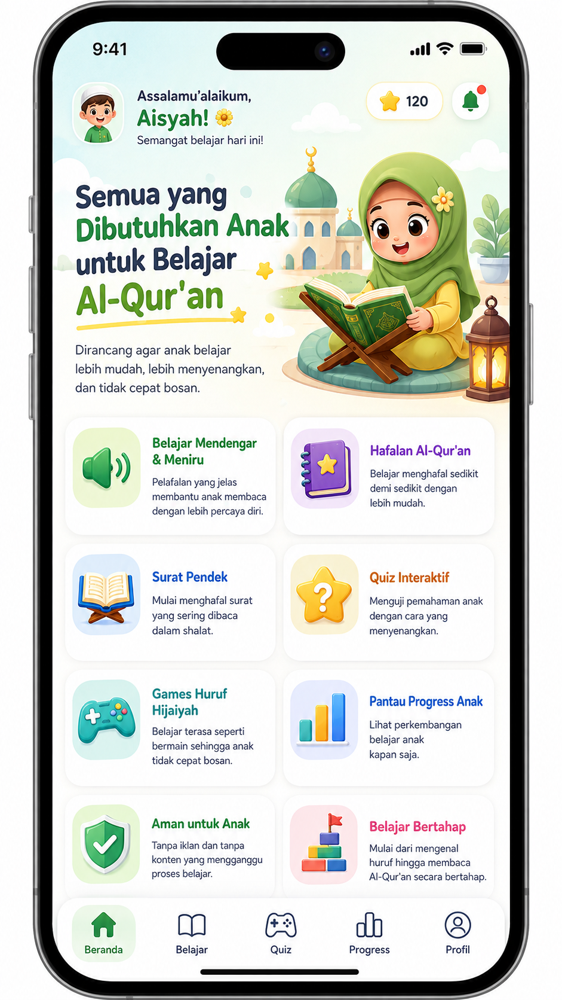
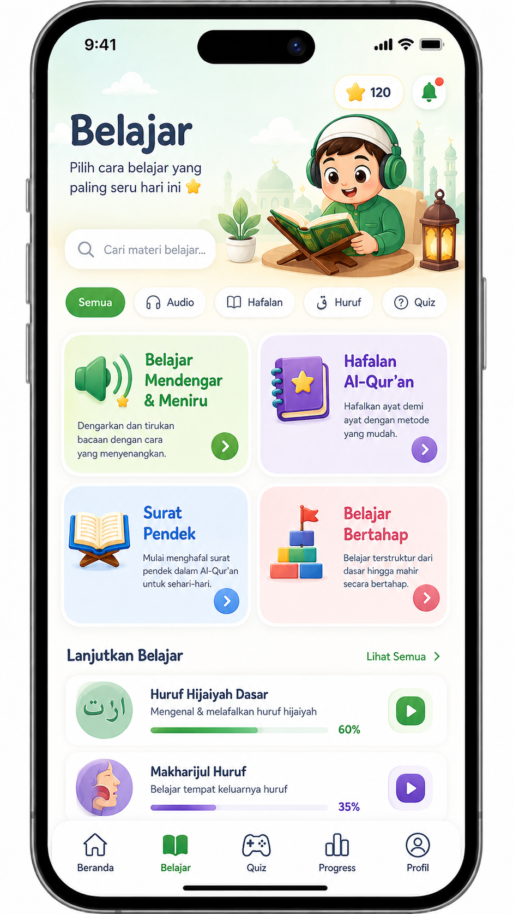
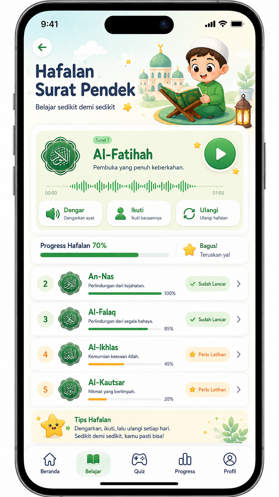
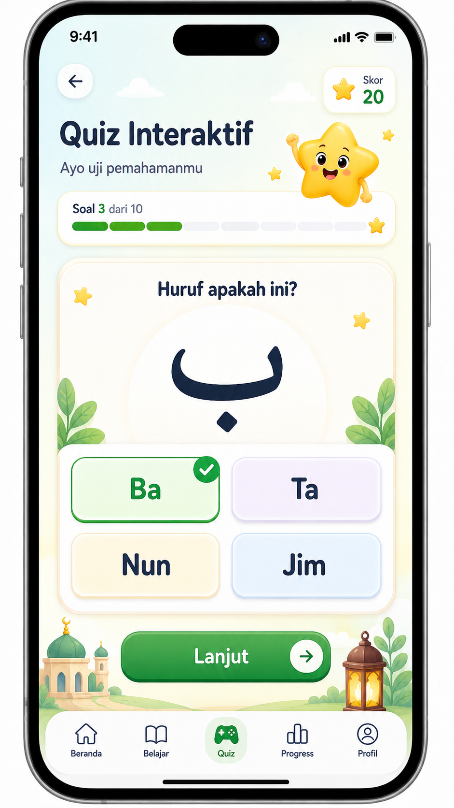
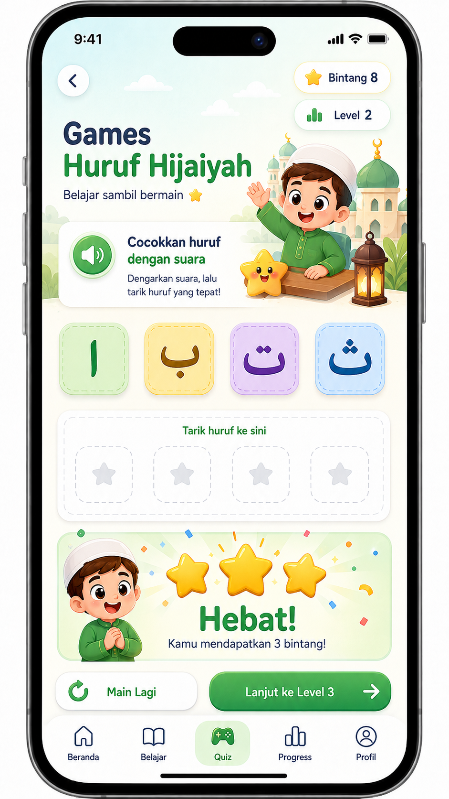
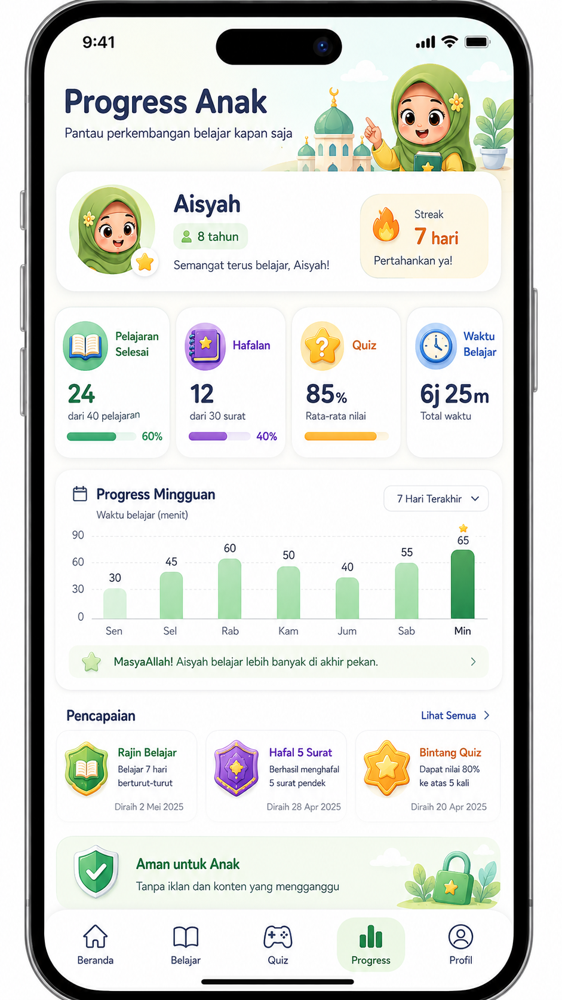

S01, S05
Home / public feature direction
Keep the friendly green/pastel direction. Move dense feature messaging to the public landing; child home prioritizes one activity.
Open full-size PNGOriginal mobile design references from the conversation. Rebuild these directions as responsive components; use the written UX specification for actual behavior, privacy and data labels.

Keep the friendly green/pastel direction. Move dense feature messaging to the public landing; child home prioritizes one activity.
Open full-size PNG
Implement a real scrollable catalog with useful empty states. Use actual progress and server-derived access.
Open full-size PNG
Separate practice percentage from parent-assessed fluency. Never use generated Arabic seals as canonical text.
Open full-size PNG
The MVP uses five questions, not ten. First-response scoring is server-side; no answer keys are shipped before submission.
Open full-size PNG
Tapping is the primary interaction. Playing and completion are separate states. Stars must reflect real reward rules.
Open full-size PNG
Place this behind the parent gate. Use a two-column metric grid on mobile; remove fabricated dates, streaks and memorization claims.
Open full-size PNG{kind=link}
{kind=link}
{kind=link}
{kind=link}
{kind=link}
{kind=link}